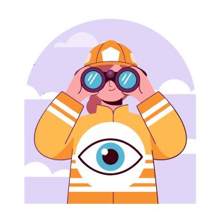
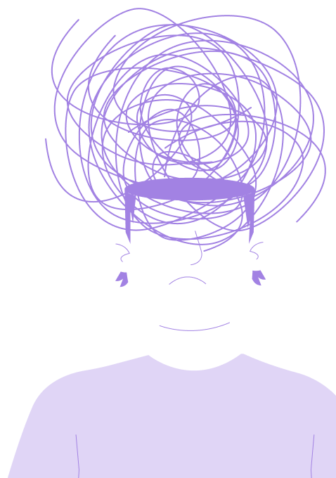
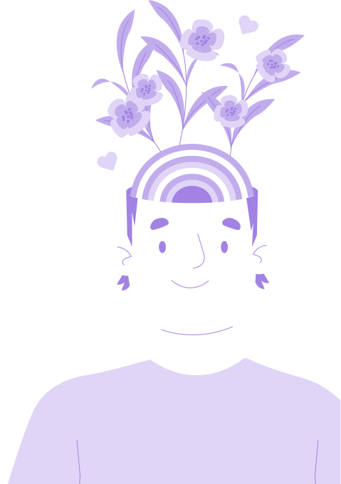
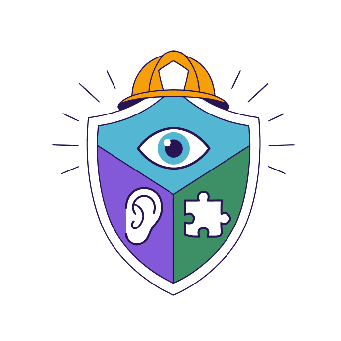
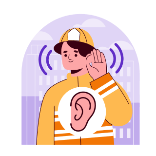
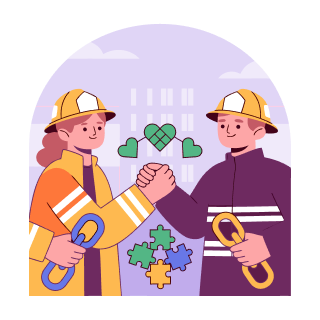

1OLHAR
Observar a segurança da cena, identificar necessidades básicas e mapear sinais de crise ou alerta grave.
Cartilha Técnica de Orientação Inicial entre Pares
no Corpo de Bombeiros Militar de Minas Gerais
Esta cartilha é produto do Trabalho de Conclusão de Curso intitulado “Primeiros Socorros Psicológicos como ferramenta de apoio inicial à saúde mental no Corpo de Bombeiros Militar de Minas Gerais”, desenvolvido pelo Aluno BM Antônio Henrique Carneiro Martins no âmbito do Curso Superior de Tecnologia em Segurança Pública – Gestão e Gerenciamento de Catástrofes, da Academia de Bombeiros Militar de Minas Gerais.
Seu conteúdo está fundamentado nos princípios dos Primeiros Socorros Psicológicos e no modelo “Olhar, Escutar e Conectar”, proposto pela Organização Mundial da Saúde, reconhecido internacionalmente como estratégia de apoio humano inicial em situações de sofrimento emocional.
A proposta não é transformar o militar em profissional de saúde mental, mas oferecer orientações simples, seguras e compatíveis com os limites éticos, técnicos e institucionais da atuação entre pares.
Esta cartilha foi projetada para ser uma ferramenta de consulta rápida e prática no cotidiano das unidades e frações do CBMMG. Ela deve estar acessível para orientar a tropa nos momentos em que o cuidado mútuo se fizer mais necessário.
A proposta não é substituir profissionais de saúde, mas orientar uma primeira aproximação responsável, respeitosa e segura.
“Mais do que um requisito acadêmico, este trabalho busca contribuir para o fortalecimento da cultura de cuidado no CBMMG, incentivando a observação responsável de sinais de sofrimento, a escuta respeitosa e a aproximação segura dos militares aos canais formais de apoio e atenção à saúde existentes na Corporação.”
Cuidar de quem
salva também é
proteger vidas


PSP
Primeiros Socorros
Psicológicos

Primeiros Socorros Psicológicos (PSP) são uma forma de apoio humano, prático e não invasivo oferecido a uma pessoa em sofrimento mental.
No contexto do CBMMG, servem para orientar uma primeira aproximação entre colegas, com respeito, escuta e encaminhamento adequado.
PSP É
PSP NÃO É
O modelo da Organização Mundial de Saúde estrutura os Primeiros Socorros Psicológicos em três ações centrais:

1Observar a segurança da cena, identificar necessidades básicas e mapear sinais de crise ou alerta grave.

2Aproximar-se com discrição, ouvir ativamente sem interrupções e reconhecer o sofrimento relatado pelo colega, respeitando seu tempo e seu silêncio.

3Oferecer ajuda prática imediata, direcionar o militar aos canais institucionais adequados e acionar recursos de apoio.
Um sinal isolado nem sempre indica sofrimento psíquico. Entretanto, a presença de vários sinais simultaneamente ou por período prolongado merece atenção e aproximação cuidadosa.
Há risco imediato à vida ou à segurança?
Não deixe o militar sozinho. Acione apoio emergencial. (SAMU 192, CB 193)
Acompanhe até a chegada do apoio
Aproxime-se com discrição, escute sem julgamento e oriente busca de apoio.
Os sinais persistem ou prejudicam o serviço?
Conecte aos canais institucionais de saúde.
Mantenha atenção respeitosa; demonstre disponibilidade; observe evolução
Se houver fala sobre morte, desejo de desaparecer, ameaça de autoagressão, desorganização intensa ou risco à segurança, não conduza a situação sozinho. Permaneça próximo, preserve a segurança, acione os serviços emergenciais e encaminhe imediatamente aos canais adequados.
Se o colega não quiser falar naquele momento, demonstre disponibilidade, respeito e mantenha uma postura acolhedora. Às vezes, saber que alguém se importa já é um primeiro passo importante.
Ajudar não significa assumir o problema do colega. O militar deve oferecer presença, escuta e orientação, mas não deve fazer diagnóstico, investigar detalhes íntimos ou prometer resolver a situação.
Evento crítico é toda situação intensa ou potencialmente traumática que pode abalar emocionalmente o militar durante ou após a ocorrência.
Encaminhe ou acione apoio emergencial imediatamente quando houver:
Em situações de risco, o apoio entre pares não é suficiente.
Não deixe o militar sozinho, preserve a segurança e acione imediatamente apoio emergencial.
Para orientação e encaminhamento em saúde
Quando houver necessidade de avaliação especializada.
Quando houver risco, prejuízo funcional ou necessidade de medida institucional segura.
Quando houver risco imediato à vida, à segurança ou à integridade do militar ou de terceiros.
Quando isso for seguro e adequado à situação.
Encaminhar não significa se afastar de forma fria ou transferir o problema.
Sempre que possível, ajude o colega a dar o primeiro passo: acompanhe até o setor adequado, oriente o contato ou acione apoio emergencial.
Respeitar a privacidade é importante. Entretanto, diante de situações de risco, proteger a vida e a segurança deve ser a prioridade.
O sigilo não deve impedir a proteção da vida ou da segurança. Procure apoio responsável quando houver:
Buscar apoio não significa trair a confiança do colega, mas agir com responsabilidade e cuidado.
0 de 8 concluídos
Cuidar também é
Proteger.
Esta cartilha não substitui o atendimento especializado, mas pode ajudar o militar a dar o primeiro passo: olhar, escutar e conectar o colega aos canais adequados de apoio.
No CBMMG, cuidar da tropa é também preservar vidas, fortalecer vínculos e proteger a missão.